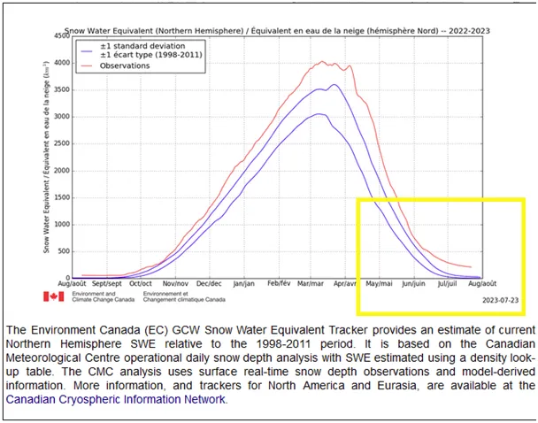
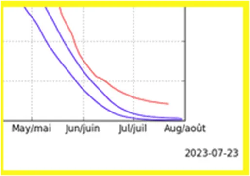
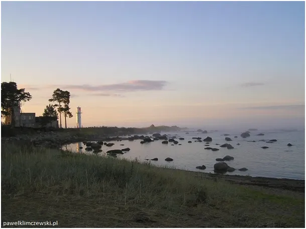
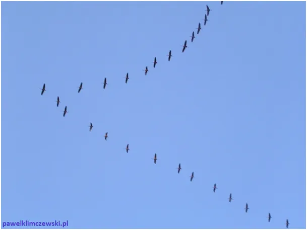

Kto jest nadętym bufonem, a kto Wróżką Zębuszką?
Wykres pokazuje ilość wody uwięzionej w postaci śniegu na północnej półkuli. Linie niebieskie to typowe odchylenia w latach ubiegłych, czerwona stan na dziś.


Rekord ilości śniegu na północnej półkuli padł w 2023! A potem było coraz... No właśnie, ciekawe co zapiszą przyszłe pokolenia o tym zdumiewającym zjawisku. Archiwa będą podawać dane o tym, że bilans w Arktyce to spore oziębienie, a popularna prasa będzie pełna alarmistycznych komunikatów przeciwnych. Analitycy nie będą mieli złudzeń. Prasa oszukuje społeczeństwo podobnie jak w latach 70-tych XX wieku, "kończyły się węgiel i ropa". Mechanizm opłat za emisję będzie dopełnieniem prostej zagadki. Będzie też sporo zapisów, takich jak ten, mówiące wprost o dziwnym dwugłosie.

Za tydzień kończy się meteorologiczny cykl pomiarowy. Wraz z końcem lipca wchodzimy w nowy cykl pór roku. Zawsze śnieg w tym momencie znikał z północnej półkuli, w tym roku nie ma na to szans. Czerwona linia wcale nie chce opadać, jest za zimno. Śnieg zalega w arktycznych górach, ale też w wysoko w Himalajach itp. miejscach. Pod koniec sierpnia zacznie go już przybywać, bo od około 8-10 sierpnia bilans termiczny naszej półkuli będzie malał.

Gdy u nas od Anki mamy zimne wieczory i ranki na dalekiej północy, w wysokich górach Eurazji, mamy mrozy i śnieżyce. Tak wyszło...
Nikt nie zna przyszłości, a jak ktoś mówi, że zna to jest nadętym bufonem i na pewno nie jest naukowcem. Jest Wróżką Zębuszką!
Paweł Klimczewski